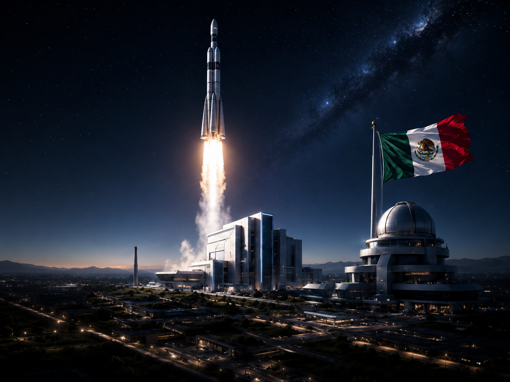

Centro Espacial Mexicano
México mirando más allá del horizonte.
Una institución dedicada al desarrollo científico, tecnológico y educativo para impulsar la exploración espacial, la innovación aeroespacial y la formación de nuevas generaciones de científicos, ingenieros y emprendedores.

🚀
Exploración
Impulso aeroespacial
🇲🇽
De México al cosmos
Ciencia al servicio de la nación
Una plataforma nacional para transformar curiosidad en descubrimiento.
El Centro Espacial Mexicano busca convertir a México en una potencia latinoamericana en ciencia y tecnología espacial durante el siglo XXI. Su enfoque combina educación, investigación, innovación, colaboración internacional y desarrollo de talento humano.
Más allá del horizonte.

Desarrollar conocimiento, tecnología y talento humano.
Impulsar la exploración pacífica del espacio, la innovación científica, el crecimiento económico y el bienestar de la sociedad mexicana.
Ser el principal centro espacial de América Latina.
Ser reconocido mundialmente por sus contribuciones a la exploración del universo y al desarrollo tecnológico de México.
Valores
Principios que guían cada misión.
Ciencia, colaboración e integridad para construir un futuro espacial con impacto real para México y la humanidad.
Innovación
Buscar constantemente nuevas soluciones y tecnologías.
Excelencia
Mantener los más altos estándares científicos y académicos.
Integridad
Actuar con ética, transparencia y responsabilidad.
Colaboración
Trabajar en equipo con instituciones nacionales e internacionales.
Sustentabilidad
Promover el uso responsable de los recursos y el cuidado del planeta.
Inspiración
Motivar a las nuevas generaciones a alcanzar grandes metas.

Servicio a la nación
Poner la ciencia y la tecnología al servicio del pueblo mexicano.

Nuestro propósito
Inspirar, educar e innovar desde México hacia el cosmos.
El Centro Espacial Mexicano existe para convertir la curiosidad humana en descubrimientos que beneficien a México y a toda la humanidad. Nuestro destino no termina en la Tierra; apenas comienza entre las estrellas.

Curiosidad con impacto
Educación espacial, innovación y tecnología para nuevas generaciones.

Meta 2050
Una visión nacional de largo alcance.
Primer astronauta mexicano formado íntegramente por el CEM.
Constelación nacional de satélites.
Base científica mexicana en colaboración internacional para exploración lunar.
Liderazgo aeroespacial de América Latina.
Un millón de jóvenes mexicanos capacitados en ciencia y tecnología espacial.
C E M